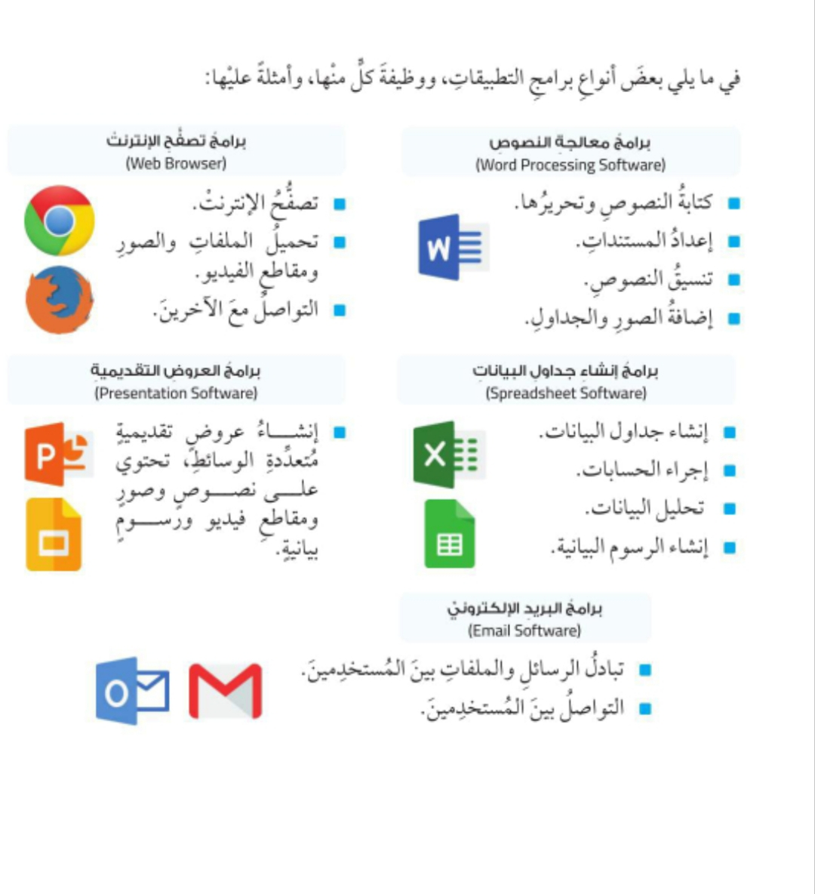
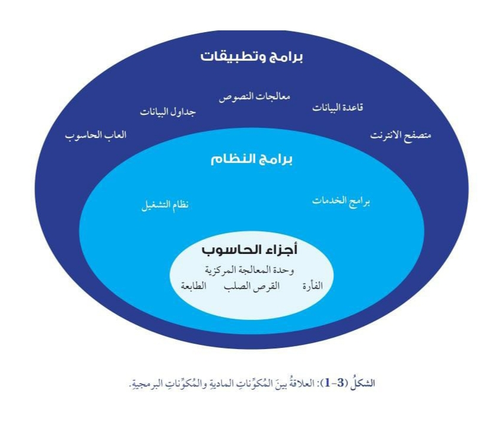

هي مجموعة من البرامج والتطبيقات التي طُوّرت لتنفيذ مجموعة متنوعة من المهام في أجهزة الحاسوب والأجهزة الذكية الأخرى، وتُعرَف أيضًا باسم البرمجيات.
تؤدي المكونات البرمجية دورًا فاعلًا في جهاز الحاسوب؛ إذ من دونها تصبح معدات الحاسوب، أي المكونات المادية، بلا فائدة.
أنواع البرمجيات
تُصنَّف البرمجيات إلى نوعين رئيسين، هما:
برامج النظام
(System Software).
برامج التطبيقات
(Application Software).
ثانيًا: برامج النظام (System Software)
وضح المقصود ببرامج النظام
برامج مسؤولة عن إدارة عمل جهاز الحاسوب والتحكم فيه وتشغيله.
ويُعَدّ برنامج النظام وسيطًا بين المكونات المادية التي تُشكّل جهاز الحاسوب وبرامج التطبيقات التي تتفاعل معها بصورة مباشرة.
من أبرز الأمثلة على برامج النظام
برامج نظم التشغيل
(Operating Systems).
ثالثًا: برامج نظم التشغيل (Operating Systems)
وضح المقصود ببرامج نظم التشغيل
هي برامج توفّر واجهة تتيح التفاعل بين المستخدم وجهاز الحاسوب.
أمثلة على نظم التشغيل
مايكروسوفت ويندوز
(Microsoft Windows).
ماك أو إس
(macOS).
أندرويد
(Android).
رابعًا: برامج التطبيقات (Application Software)
وضح المقصود ببرامج التطبيقات
برامج حاسوبية صُمّمت لأداء مهام محددة تتعلق بحاجات المستخدمين.
ويمكن لهذه البرامج أن تُوجَّه إلى أغراض شخصية أو مهنية أو تعليمية، وتُعرَف أيضًا باسم التطبيقات.
إضاءة 💡
تشتمل البرمجيات على مجموعة من البرامج.
البرنامج:
مجموعة من التعليمات والأوامر المتسلسلة اللازمة لتحقيق هدف معين.
يتولى المبرمج كتابة التعليمات والأوامر المتسلسلة بلغات معينة يفهمها جهاز الحاسوب، وتُسمّى لغات البرمجة.
إثراء 📚
بدأ استخدام مصطلح البرمجيات عام 1948م، حين أخذ عالم الحاسوب توم كيلبرن بكتابة أول تعليمات برمجية باستخدام واحد من أقدم أجهزة الحاسوب في ذلك الوقت، عُرف باسم:
Small-Scale Experimental Machine (SSEM)
وهو أول جهاز حاسوب ينفّذ برنامجًا مخزّنًا في ذاكرته، ما يمثّل خطوة مهمة في تاريخ تطور أجهزة الحاسوب.
بُرمج الجهاز لتنفيذ عمليات حسابية رياضية، واستغرق نحو 52 دقيقة في إيجاد ناتج العملية الحسابية:
218 = 262,144.

خامسًا: العلاقة بين المكونات المادية والمكونات البرمجية
اذكر العلاقة بين المكونات المادية والمكونات البرمجية
كيف يصبح التكامل في جهاز الحاسوب بين هذه المكونات؟

عند تنفيذ أمر محدد في جهاز الحاسوب، تعمل المكونات المادية والمكونات البرمجية بتناغم وسلاسة لتنفيذ الأمر.
فالمكوّن المادي، مثل وحدة الإدخال، يحتاج إلى أوامر وتعليمات تصدر من نظام التشغيل لتنفيذ مهمة إدخال البيانات.